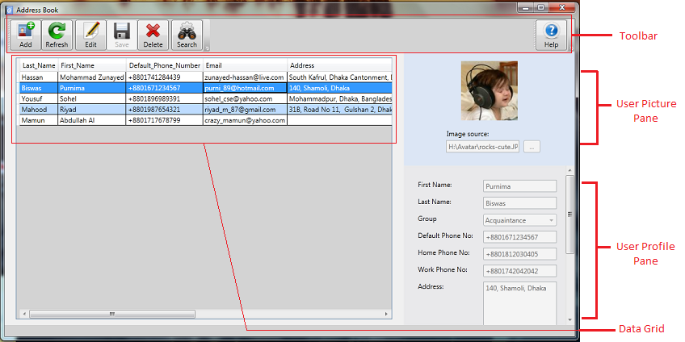

1. Getting Started |
|
|
Welcome to AddressBook, aims to manage all of your contacts in a easiest way. You can search contact by various category and also if you want, you may backup your contact database too. Whether you are a novice or professional, AddressBook will help you to manage your contact information. |

Fig 1: AddressBook
| Send feedback to zunayed-hassan@live.com |